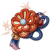
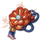
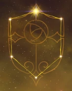

El gran general de las tropas de Watatsumi. Sus subordinados confianplenamente en el.
Artefacto/s recomendados

 


Def% / atq%

Bono Geo

Daño / Prob critico
daño/prob critico > DEF% > atq%
Talentos
Pasivas
Constelacion
Armas Recomendadas


Personajes compatibles